Turn Long Framer Articles into Easy Reads
Make long-form articles, documentation, and Framer CMS blogs effortless to read. Auto Table of Contents scans page headings, creates a clickable outline, and highlights the current section as visitors scroll. Add it to your Framer canvas with one click, enjoy smooth scrolling with sticky header offset, and customize colors and fonts with zero code and zero website slowdowns.

CORE CAPABILITIES
Built to Solve Real Framer Blog & Article Navigation Problems
Keep your visitors engaged and help them find answers faster. Here is what Auto Table of Contents does for your Framer site
Active Scroll Highlight Follows Your Readers
The outline tracks where readers are on the page and highlights the current section automatically as they scroll down your article.
Automatic Heading Detection for Static & CMS Pages
Scans your page or Framer CMS article automatically. It builds a clickable table of contents instantly without typing links by hand.
Duplicate Headings Always Jump to the Right Place
Articles with repeated titles like Overview or Features get unique link destinations so readers never jump to the wrong section.
Matches Your Exact Framer Design Style
Customize colors, active badges, typography, borders, and spacing directly inside Framer. It blends into your layout with zero page flicker.
Sticky Header Offset Prevents Covered Titles
Set custom spacing so clicked headings stop cleanly below your sticky navigation bar instead of hiding under your website header.
Updates in Real Time When Content Changes
Whenever you edit article text or publish new CMS blog posts, the table of contents updates its headings and link tree automatically.
Meet the Person, Behind the Product
"We built this because great work deserves to be seen clearly, not just described. One drag should say it all."
MORE FEATURES
Built to Customize, Automate, and Scale.
Everything you need to guide readers, organize long articles, and polish your blog design
Clean Mobile Text Wrapping
Section titles wrap neatly on mobile screens so long blog headings never get clipped or push layout bounds off screen.
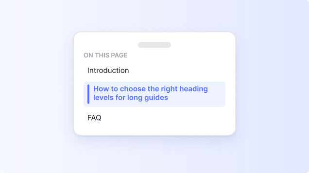
Collapsible Outline for Narrow Sidebars
Fold your table of contents into a compact drawer on narrow containers or mobile screens to save valuable page space.
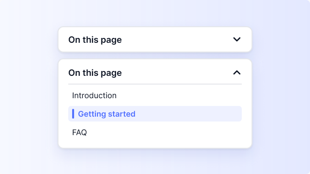
Custom Heading Range (H1 to H6)
Choose exactly which heading levels appear in your outline with sensible H2 and H3 presets selected by default.
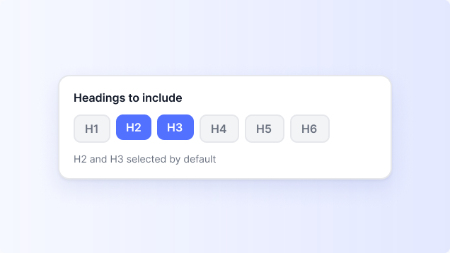
Free Forever with Zero Watermarks
Use our full core outline component without paying monthly fees, seeing plugin watermarks, or hitting usage limits.
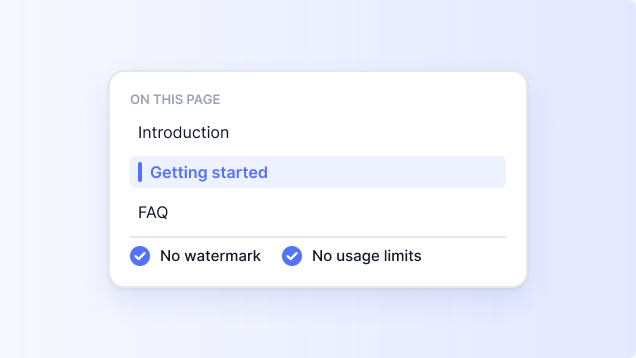
Keyboard and Touch Screen Friendly
Readers can tab through links using keyboards or tap large touch targets on phones with full accessible navigation.
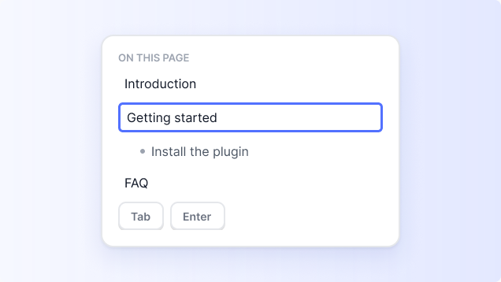
Nested Outline with Smart Indentation
Organize subheadings in a clean indented visual tree that makes long technical guides quick and intuitive to browse.
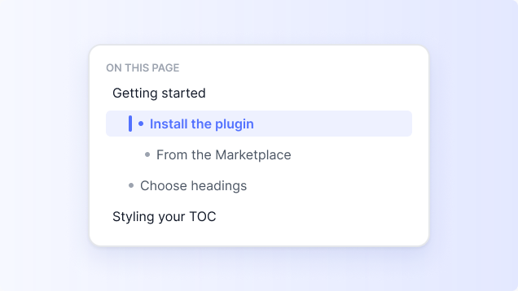
No Reader Accounts or Login Locks
Your table of contents runs directly on your website forever without requiring reader logins or third-party servers.
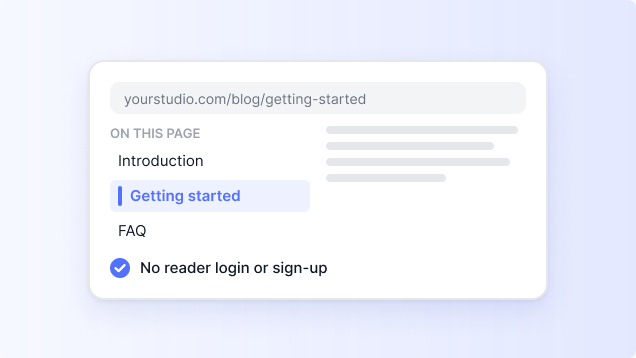
One Named Article Container Target
Target your main article section by ID so navigation headers, sidebars, and footer titles never clutter the outline.
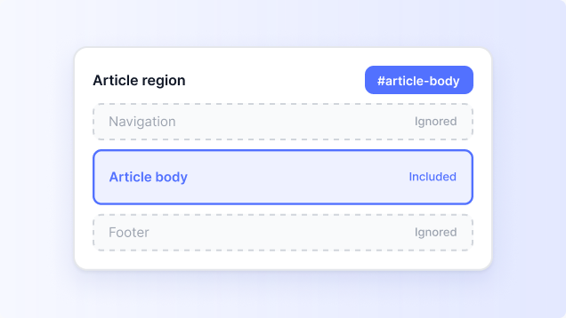
Reduced Motion for Sensitive Readers
Disables smooth scroll jumping automatically for visitors who have reduced-motion preferences turned on in browsers.
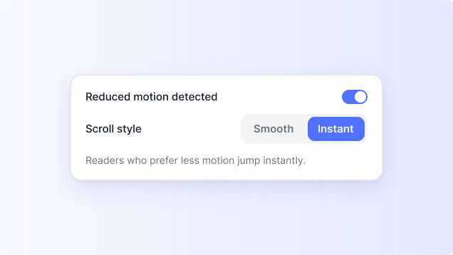
Reusable Style Presets Across Projects
Save your custom fonts and colors as personal presets and apply your signature style to new projects in one click.
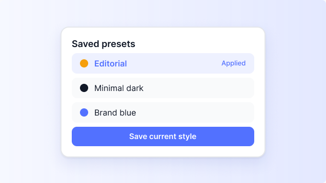
Safe Component Updates and Recovery
Protect your custom edits with fail-safe initialization that never breaks your layout or leaves orphaned code behind.
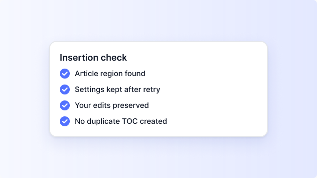
Smooth or Instant Scroll Options
Select between smooth animated scrolling or instant viewport jumping to match your site interaction style perfectly.
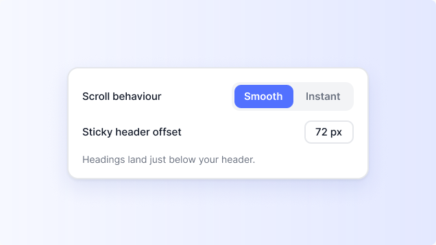
HOW IT WORKS
Get Started in 3 Simple Steps.
Add an automatic table of contents to your Framer articles in under three minutes.
Add to Your Canvas
Open the Auto Table of Contents plugin inside Framer and click Insert Component. Place it beside your article or inside a sticky sidebar column.
Pick Your Headings and Style
Set your target article section ID (like #article-content) and select which headings to display (H2 and H3). Customize colors, active badges, and fonts in the right-side properties panel.
Publish and Enjoy Smooth Navigation
Publish your Framer website. As visitors read your article, the table of contents follows along smoothly, highlighting each section in real time.
PRICING PLANS
Affordable Plans for Every Framer Project.
Choose the plan that fits your Framer project and start adding interactive Before After image sliders without extra complexity.
Monthly Plan
Best for Personal Portfolios
$4.99/ Month
Get Monthly PlanWhat’s Included:
- Pay Monthly. Cancel Anytime.
- Use on 1 Framer Website
- Framer CMS & Static Page
- Automatic H1 to H6 Heading
- Fixed Header Offset Control
- Get Priority Support
Yearly Plan
Best for Small Businesses
$49.99/ Year
Get Yearly PlanWhat’s Included:
- Pay Monthly. Cancel Anytime.
- Use on 1 Framer Website
- Framer CMS & Static Page
- Automatic H1 to H6 Heading
- Fixed Header Offset Control
- Get Priority Support
Lifetime Plan
Best for Enterprice Websites
$99.99Pay Once
Get Lifetime AccessWhat’s Included:
- Pay Monthly. Cancel Anytime.
- Use on 1 Framer Website
- Framer CMS & Static Page
- Automatic H1 to H6 Heading
- Fixed Header Offset Control
- Get Priority Support
**The above links will take you to the Framer plugin Store, where you can install the app and purchase your plan.
FAQ’s
Frequently Asked
Common Questions About Framer CMS Multi-Filter & Search.
Does this plugin work with Framer CMS blog posts?
How does the plugin avoid picking up headings from my header or footer?
What happens if my article has two headings with the exact same name?
Can I prevent headings from hiding under my sticky navigation bar?
Does this table of contents slow down my website or hurt SEO?
Can I customize the outline style to match my website colors?
Start showing your work the way it deserves to be seen
Browse our apps on the Framer Marketplace and install in one click.
Have a Look